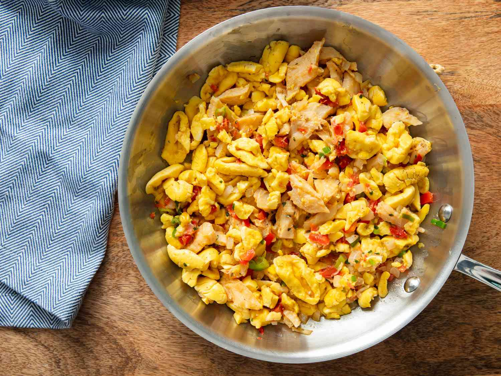

Ackee and saltfish

Ackee and saltfish is a special dish in Jamaica, loved not only as the
national favorite but also for breakfast or brunch. Ackee is a fruit
with a thick red skin. Before it's ripe, it's like a closed pod, but
when it's ready, it opens up to show pretty petals with three or
four yellow parts, each with a black seed on top. Originally from
West Africa, ackee came to Jamaica with enslaved Africans, who
believed in the protective power of its seed.
Unripe ackee fruit contains hypoglycin A, causing
Jamaican Vomiting Sickness if consumed. To safely
enjoy, wait for full ripening when arils turn red,
and ensure thorough cooking to eliminate toxins. Acknowledge
the potential risks and practice proper preparation for a
delicious, safe culinary experience.
Ingredients
- 8 ounces (225g) salt cod
- 2 tablespoons (30ml) neutral oil, such as canola or vegetable
- 2 tablespoons (1 ounce; 30g) diced yellow onion, from 1/4 onion
- 2 heaping tablespoons (1 ounce; 30g) diced bell pepper, from 1/2 bell pepper
- 1/2 Scotch bonnet chile, stemmed, seeded, and minced
- 2 garlic cloves, minced
- 1 small tomato (about 2 ounces; 55g), cored and diced
- 1 scallion (10g), thinly sliced
- 2 tablespoons (3g) fresh thyme leaves and tender stems, chopped
- One 18–20-ounce can ackee
- Kosher salt and freshly ground black pepper
Steps
- Rinse salt cod under cold running water until any salt on its surface is washed away.
- Transfer to a medium bowl and cover with fresh water. Soak at room temperature for 1 hour, or cover and refrigerate overnight.
- Drain salt cod, discard soaking water, transfer fish to a small saucepan, and cover with fresh water.
- Bring to a boil over medium-high heat, and cook until fish flakes easily when prodded with a fork, about 40 minutes.
- If the cod is still too salty, drain and discard cooking water, return fish to saucepan, cover with a fresh change of water, and boil for an additional 20 minutes.
- Once the salt cod is cooked and seasoned to your liking, drain and flake fish into 1/2- to 1-inch pieces, discarding any bones and silvery membranes. Set aside.
- In a 12-inch skillet, heat oil over medium heat until shimmering.
- Add onion, bell pepper, Scotch bonnet, and garlic and cook, stirring occasionally, until softened, about 5 minutes.
- Add the flaked salt cod and cook, stirring occasionally, until fish is heated through, about 5 minutes.
- Add tomato, scallion, and thyme, stir to combine, and cook until vegetables are tender and mixture is aromatic, about 5 minutes.
- Add ackee, stir gently to incorporate, taking care not to over-mix which can cause the ackee to become mushy, and cook until ackee is heated through, about 3 minutes.
- Season with salt and pepper to taste.